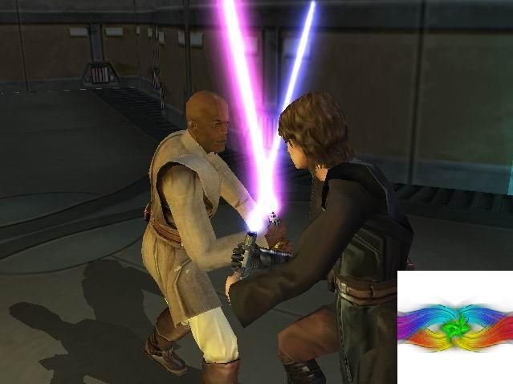

Forums galactiques > Assemblée Galactique : diplomatie officielle > Alexandre le grand ... mythomane
| Gunther Respect diplomatique : 286  15/04 ETU 14:01 | Score : 4 Détails Ces hommes sont bien altiers, je pense. Ils sont trop lâches pour attaquer des commandants de leur taille.
C'est bien triste! Commandants , vous qui vous faites attaquer par ce geore( je sne sais point comment cela s'écrit!) de personne dont l'esprit est parsemé de méchanceté. Signalez-le! En général, les 4/5 des commandants ne sont pas d'accord avec ces tyrans dont la lâcheté dépasse toute imagination. | ||
| Alexandre Respect diplomatique : 1  15/04 ETU 14:44 | Score : 1 Détails J'interviens pour vous dire que moi aussi je me suis fait attaquer par alexandre le grand. Toute les planètes au nom d'Alexandre le grand dans le système 58 m'appartenait.
| ||
| Chacomat Respect diplomatique : 78  15/04 ETU 14:51 | Score : 0 Détails Oh, un alexandre ou un autre ça change pas grand chose^^"
| ||
| Versaille Respect diplomatique : 98  15/04 ETU 15:01 | Score : 0 Détails -Il va falloir prendre des initiatives à l'égard d'Alexandre le Grand...
Versaille s'était levé: -Ne vous fait-il pas penser à Cronos?Avec ses fausses excuses hypocrites! | ||
| las casas Respect diplomatique : 125  15/04 ETU 15:15 | Score : 6 Détails Chers amies, cher amis... La colère permet la guerre, le bon sens et la diplomatie..la PAIX. n'est-elle pas la valeure la plus chère à esperance? Vous aimez esperance, cela transparait dans vos paroles et je m'en réjouit. Alors utilisez des méthodes bénéfiques à notre galaxie, et haranguer à longeure de journée un commandant qui ne s'est exprimé pas plus de deux fois en 3 jours dans un débat le concernant..cela ne correspond pas au comportement de rigueur chez des hommes aux idéaux si pacifistes!
Je propose que nous laission Alexandre le grand s'exprimer et que par la parole (et ensuite, plus concrêtement par les geste) il rende les planètes qu'il à subtilisées à de trop nombreux commandants. Cela sera la preuve de sa bonne foi. Il fait partie des rares commadnants qui ont tenté de sortir du joug tyranique de Cronos. Une chance ne pourrait elle pas être le plus beau cadeau qu'esperance puisse donner a cet homme qui tente le passage difficile de l'obscurantisme vers la raison? Alors attendons la venue d'alexandre, puis avisons sèrieusement plutôt qu'avec de futiles paroles qui ne mènent à rien! Amicalement Las Casas | ||
| San Hill Respect diplomatique : 89  15/04 ETU 15:22 | Score : 3 Détails Le CBI n'adhère pas à vos idées, ce commandant a eu largement le temps de s'exprimer, d'exposer ses intentions et de rendre les planètes prises aux commandantes et commandants innocents, ce qui n'a pas été fait jusqu'à présent, de plus ce conflit ne concerne pas la Nouvelle Espagne, juste un de ces membres qui soutient avec Alexandre le grand, sinon nous pensons que vous auriez plus d'une coalition sur le dos...
En attendant une réponse, chaleuresement le CBI. | ||
| Kryllenne Respect diplomatique : 596  15/04 ETU 15:25  | Score : 5 Détails "Salutations...
Cher las casas, permettez-moi de vous citer : [Je propose que nous laission Alexandre le grand s'exprimer et que par la parole (et ensuite, plus concrêtement par les geste) il rende les planètes qu'il à subtilisées à de trop nombreux commandants. Cela sera la preuve de sa bonne foi. Il fait partie des rares commadnants qui ont tenté de sortir du joug tyranique de Cronos. Une chance ne pourrait elle pas être le plus beau cadeau qu'esperance puisse donner a cet homme qui tente le passage difficile de l'obscurantisme vers la raison?] -> C'est un fait : Le principal intéréssé doit faire une déclaration concernant les planètes non-rendues. J'entends dans 'rendues', TOUTES les planètes, je ne vois pas en quoi le cas de Yuna soit une exception. Les raisons 'formulées' ne m'ont pas permise de comprendre le pourquoi de ce refus. Si ma mémoire est bonne, il était question d'un 'piratage' de l'administration (HRP : Compte) du DR vondermark, qui aparemment était effectué par Dame Yuna... (A vérifier) Si ceci est vérifié, merci d'apporter les preuves. (en HRP si nécéssaire, afin d'enfin juger de la situation). Pour ce qui est de la 'chance'... Si je ne me trompe pas, plusieurs Cdts. la lui ont déjà donné, cette 'chance'... Alors, nous allons petit à petit vers un cas chronique de Cron-os... Promesses sur promesses, paroles non-respectées... Et je pense que plusieurs d'entre nous refuse de revoir cette 'technique'... Bref la goutte d'eau a fait déborder le vase. Ceci est bien sûr et toujours mon avis strictement personnel. La prise de parole d'Alexandre le Grand est vivement attendue. Cordialement, Kryllenne" | ||
| las casas Respect diplomatique : 125 15/04 ETU 15:49 | Score : 1 Détails Comme vous le savez pour la plupart, oui, alexandre la grand fait partie de la nouvelle espagne. Je suis en grande discussion avec lui en ce moment même: Si avant demain matin, alexandre la grand n'a pas exprimé son opinion avant demain matin: Je prendrais avec vous les mesure qui s'imposent. La Chance dont je parlais, est pour moi, plus qu'un simple hasard: c'est une communication. Celle ci permettrait de régler de multiples prblemes si l'humain pensait à s'en servir avant d'envoyer ses CLA. Ecusez ma posible méprise, mais je n'aimerais point m'exprimer sur un sujet du nom de "Las Casas un mythomane"..si vous voyez ce que je veux dire!
De plus, Je me porte caution du geste d'alexandre: à L'exception des restitutions à la comadnante Yuna. Vous souhaitiez un mgistral HRP...le voilà dame Krylenne: Yuna est une camarade de Vondermark. Dans leurs lyscée, ils peuvent se rejoindre dans un cyber café, ou la connexion à internet est possible: Le dr a joué à apo un jeudi, et ca a bien failli être la derniere fois..car la commadnante yuna lui aurait subtilisé son mot de passe. Puis piraté son compte: Chose inadmissible comme. vous pouvez le comprendre, penser perde des moi de jeu par la fute d'une comandante souciante juste de ses besoins personnel...c'est enrvant. Je met fin avec joie à ce HRP J'espere que les choses sont claires pour tous: Demain matin, Alexandre se sera exprimé pour la rstitution de vos planète, ou bien il mourra. Maintenant, peuple d'esperance, esperez...que les choses se passent sans effusion! Las casas | ||
| Kryllenne Respect diplomatique : 596 15/04 ETU 15:56 | Score : 1 Détails "Merci Cher las casas pour vos explications,
Toutefois, je vois une faille, avec vos propres mots que je vais citer, en quoi est-ce VERIFIE ?? [Le dr a joué à apo un jeudi, et ca a bien failli être la derniere fois..car la commadnante yuna lui aurait subtilisé son mot de passe. Puis piraté son compte] -> Lui 'aurait' n'est pas une affirmation mais une supposition. Désolée mais je ne vais pas dire 'Amen' à cela. Ce n'est pas clair du tout, désolée... Il faut faire la lumière de cette affaire une bonne fois pour toutes. (Si besoin dans une autre salle) Sinon, vivement demain, pour l'éventuelle présence d'Alexandre le Grand, dans cette salle-ci... K." | ||
| Heracles Respect diplomatique : 163  15/04 ETU 16:19 | Score : 2 Détails Le commandant Heracles s'approcha de l'assemblée.
Cela faisait un moment qu'il n'y avait pas participé mais ce débat devenait critique. "Dame Kryllenne, comment voulez vérifier la véracité de cette fraude? dieu ne peut rien faire, et personne ne peut rien prouver. Le seul fait c'est que étant donné sa puissance, le Dr Vondermark ne s'attaquerait pas sans raison à une commandante beaucoup plus faible ne possédant que peu de planètes. Après c'est sa parole contre celle de yuna, mais ce qui est sur c'est que le docteur n'a rien à y gagner. Alors comment voulez vous mettre cette affaire au clair, puisque aucune preuve ne peut etre fournie par aucune des parties (a part peut etre, voir si le compte en leem de yuna s'est brusquement arrondi, ou son nombre de VME a brusquement augmenté, ce genre de chose)" Le commandant Heracles attendit les réponses qui ne manqueraient pas, certains maniant ici avec habileté la sémantique. | ||
| San Hill Respect diplomatique : 89 15/04 ETU 16:23 | Score : 2 Détails Le CBI est impatient d'attendre les explications d'Alexandre le grand afin de savoir pourquoi la restitution de la totalité de Yuna est si difficile.
En attendant une réponse, chaleureusement le CBI. | ||
| Arthérius Respect diplomatique : 1559  15/04 ETU 16:31 | Score : 5 Détails Facile...
J'ai la recette, alors suivez bien. Un zeste d'égocentrisme Une pincée de baston une mesure de mauvaise foi A déguster avec Cronos... | ||
| Kryllenne Respect diplomatique : 596 15/04 ETU 16:35 | Score : 2 Détails "Commandant Heracles,
Ravie d'un avis en plus. Je vais vous répondre, après les citations : ["Dame Kryllenne, comment voulez vérifier la véracité de cette fraude? dieu ne peut rien faire, et personne ne peut rien prouver.] -> Fort bien, alors ri personne ne rien prouver, qu'on arrête de dire que c'est Dame Yuna la fautive et qu'on arrête de lui vouloir sa mort et qu'on rende ses planètes. [Le seul fait c'est que étant donné sa puissance, le Dr Vondermark ne s'attaquerait pas sans raison à une commandante beaucoup plus faible ne possédant que peu de planètes. Après c'est sa parole contre celle de yuna, mais ce qui est sur c'est que le docteur n'a rien à y gagner.] -> Ok, nous sommes d'accord. Ce serait une preuve de lâcheté d'attaquer plus faible que soi. Hé oui, c'est sa parole contre Yuna, merci, j'avais compris cela. Le Dr n'a rien à y gagner ? Bon admettons que ce soit Yuna (conditionnel), qu'est-ce qu'elle aurait eu à y gagner en piratant l'administration du Dr ? (HRP : Compte) [Alors comment voulez vous mettre cette affaire au clair, puisque aucune preuve ne peut etre fournie par aucune des parties (à part peut etre, voir si le compte en leem de yuna s'est brusquement arrondi, ou son nombre de VME a brusquement augmenté, ce genre de chose)"] -> Je le répète, si aucune preuve ne peut être fournie par les deux parties, alors, que cette affaire soit considérée comme 'close'. Pour 'voir' si Yuna a eu augmentation de ses leems ou de ses VME, seul DIEU pourrait le 'voir'. En mettant hors-jeu évidemment ses éventuels achats et ventes de ce moment-là. ----------------------- Je finirai ma réponse envers vous cher Heracles par ceci : A vous entendre, une accusation non-vérifiée suffit à tuer quelqu'un, SANS avoir cherché la véracité des faits...? Mais où allons-nous ? J'essaie au moins de comprendre cette affaire et non la juger 'close et ADIEU Yuna'. C'est regrettable de sous-entendre de laisser tomber. Je continuerai à chercher, et si pas de réponses (que Yuna n'est pas la coupable et qu'on ne sait qui est la vrai responsable), alors, je reste sur ma position : Arrêtons les accusations, Rendez ses planètes et on en reste là. Kryllenne" | ||
| Sépulvéda Respect diplomatique : 109  15/04 ETU 18:06 | Score : 3 Détails " Dame Krylenne,
je vois que vous portez à coeur que de protéger Yuna ! Pour vous répondre quant à la probable fraude entrepis par celui-ci, il me semble que Dieu est fouillé un tant soit peu la-dedans, et à conclue en cela! Je ne puis assurer ce fait puisque Dieu ne m'a rien dit personnellement, mais je l'ai entendu dire par un autre commandant ! Ainsi, Dr vondermark ne s'attaque pas au hasard sur Yuna, mais surement avec un minimum de preuves ... Ces preuves sont surement défendables pour certains, mais visiblement, elles ont suffi pour condamner yuna par le docteur ! Je ne connais pas ce commandant, je n'ai que très peu eu affaire à lui, mais la détermination du docteur pour vaincre ce petit commandant qui ne lui apportera presque rien, est déjà une preuve de la possible accusation de yuna ... " | ||
| Kryllenne Respect diplomatique : 596 15/04 ETU 18:35 | Score : 2 Détails "Bonsoir cher Sépulvéda,
Attention au malentendu : [je vois que vous portez à coeur que de protéger Yuna !] -> Ce qui me porte à coeur n'est pas sa protection mais simplement, le fait de comprendre AVANT de conclure (juger). Est-ce si difficile à comprendre ? Je passe peut-être pour une personne chia... ennuyante en voulant chercher la véracité de l'accusation, hé bien soit, j'assume. [Pour vous répondre quant à la probable fraude entrepis par celui-ci, il me semble que Dieu est fouillé un tant soit peu la-dedans, et à conclue en cela! Je ne puis assurer ce fait puisque Dieu ne m'a rien dit personnellement, mais je l'ai entendu dire par un autre commandant !] -> Si vraiment, quelque part dans les archives de l'AG, Dieu ait conclu cela... M'ouais, je fermerai ma gueu... zut, ma bouche et dirai 'AMEN' tout simplement. [Ainsi, Dr vondermark ne s'attaque pas au hasard sur Yuna, mais surement avec un minimum de preuves ... Ces preuves sont surement défendables pour certains, mais visiblement, elles ont suffi pour condamner yuna par le docteur !] -> Bon faudrait savoir (je sais bien que vous n'êtes pas marié avec le Cdt. Heracles) mais... D'un côté on me dit : Aucune preuve, aucun moyen de savoir De l'autre : Minimum de preuves... [Je ne connais pas ce commandant, je n'ai que très peu eu affaire à lui, mais la détermination du docteur pour vaincre ce petit commandant qui ne lui apportera presque rien, est déjà une preuve de la possible accusation de yuna ... "] -> Bin oui, 'c'est une preuve de la possible accusation', forcément... Je vous corrigerais en vous disant que c'est une preuve certaine de l'accusation, maintenant ça en reste une accusation et pas une culpabilité... Bon sinon, vueillez m'excuser si je fouille la mer... le caca avec mes interventions, mais je garde ma pensée qu'on ne doit pas conclure une affaire (qu'elle quelle soit) SANS être certain. Je finirais par un exemple simple pour ma pensée : Un beau jour, un Cdt. vous accuse de quelquechose (peu importe) et veut vous éradiquer... Vous vous prôclamez innocent, et ce Cdt. l'inverse. Dans les deux cas, aucune preuve vérifiée. Et alors dans cet exemple ? On devrait le laisser vous éradiquer tout simplement ? L'affaire serait conclue, et vous seriez mort, amen... Voilà, je laisse la parole à qui la prendra. En tout cas, Alexandre le Grand, vous vous faites désirer... K." --------------------- HRP : J'aurai voulu continuer ce débat dans un autre topic mais aparemment, ça n'intéresse pas, donc désolée de pourrir (si on peut appeller mes interventions de pourries) ce topic-ci. Votez-moi négatif, j'en ai cure, sincèrement. | ||
| Vladimir Harkonnen Respect diplomatique : 2306  15/04 ETU 18:49 | Score : 3 Détails Deux choses :
[Dieu n'a jamais confirmé la fraude pour la simple raison qu'il n'en est pas capable. De plus, utiliser un prétexte HRP pour faire du RP est tout ce qu'il y a de plus décevant de la part d'un commandant... S'il voulait déclarer une guerre, qu'il trouve au moins un prétexte RP. N'en ayant pas, je prendrai la défense de Yuna en tant que commandant.] En second lieu commandant Las Casas, Alexandre le Grans a eut au moins trois chances dans le temps précédant la Nouvelle Espagne, et il en est à sa seconde depuis qu'il est dans votre coalition. Et vous voudriez une nouvelle chance ? Très bien. Je suis d'une patience inimaginable. Vous me dites qu'il s'exprimera demain matin ? Soit. Des attaques sont déjà en cours contre certaines de ses planètes qu'il détient illégalement, ce sera encore mieux s'il les rends avant. Mais si le moindre dégat était causé par sa faute entre temps, d'autres attaques seront lancées et j'exigerai de ceux qui se portent garant de sa bonne fois un remboursement intégral des pertes dûes à Alexandre le Grand. La Nouvelle Espagne a réussi a donner une DERNIERE chance à Alexandre. Un seul faux pas et il sera rayé d'Espérance par mes soins de commandant et de diplomate. La restitution des planètes de Yuna est également exigée inconditionnellement. | ||
| Kyle Emagan Respect diplomatique : 1309  15/04 ETU 19:19 | Score : 0 Détails Krykry, j'avoue tu es pas mauvaise dans le role de la chi... enquiquineuse! Héhé, c'est pour cela que je t'aime bien! Bah ouai, sinon tu ne serais pas amusante, cependant, une chose sur laquelle je trouve à te reprendre :
<<-> Ce qui me porte à coeur n'est pas sa protection mais simplement, le fait de comprendre AVANT de conclure (juger). Est-ce si difficile à comprendre ? Je passe peut-être pour une personne chia... ennuyante en voulant chercher la véracité de l'accusation, hé bien soit, j'assume.>> Il me semble dans l'integralité de tes messages que tu as déjà jugé, vu le ton que tu emploie et envers qui tu t'enerve si je puis dire... Difficile de juger quelqu'un lorsqu'on est absolument pas objectif... Bon d'accord j'avoue j'aimerai bien que Alexandre reste en vie! Bah ouai, certes j'ai déjà eu des problèmes avec lui, mais il à retiré ses flottes courtoisement, et à fait un second bon pas envers un ami... Et puis, j'aime bien les mechants, c'est comme ça! Marre que ce soit toujours le bien qui triomphe! Enfin pour Cronos on fera une exception... | ||
| Kryllenne Respect diplomatique : 596 15/04 ETU 19:34 | Score : 1 Détails "Bonsoir Cdt. Kyle,
Merci merci pour le compliment ^^ Trèves de plaisanteries, j'aimerais mettre le point sur le 'i'. [Il me semble dans l'integralité de tes messages que tu as déjà jugé, vu le ton que tu emploie et envers qui tu t'enerve si je puis dire... Difficile de juger quelqu'un lorsqu'on est absolument pas objectif...] -> Je n'ai aucunement déjà jugé. Revoyez mes interventions et dites-moi où j'ai jugé le DR vondermark de menteur ou dit la vérité. OU que Yuna est coupable ou innoncente. Dans la situation actuelle, je suis en phase de recherche. Et non de jugement. Le seul jugement que j'ai fait est ceci : Je refuse d'accepter de croire des accusations sans preuves. Cette situation aurait pû toucher n'importe qui. Et j'aurais ouvert ma gueu... bouche également pour comprendre. D'où mon énervement. Je ne vais pas me répéter. Mais je vais le faire : Je veux comprendre AVANT de conclure (juger). Point final. Merci de votre compréhension. K." ----------- Sorry pour l'édit. | ||
| Kyle Emagan Respect diplomatique : 1309 15/04 ETU 20:02 | Score : 2 Détails Alors permet moi de me corriger, sur les messages, c'est peut etre juste une impression, mais tu semble avoir pris partie, non pas en disant que un tel ou un tel est un menteur, mais, de maniere moins directe, un peu comme les journaux incendient les politiciens... On va dire que je n'ai pas l'impression que tu soit très objective
Sinon tu as dit : <<J'entends dans 'rendues', TOUTES les planètes, je ne vois pas en quoi le cas de Yuna soit une exception.>> Cela indique clairement la personne que tu defends... A moins que tu defends une partie en etant neutre sans avoir jugé? Héhé, dur à faire il me semble ! <<Bref la goutte d'eau a fait déborder le vase. Ceci est bien sûr et toujours mon avis strictement personnel>> Hum, en gros pour toi ça ne peux plus continuer ainsi et il faut remettre Alexandre en place... C'est un petit peu un jugement non? PS : Ne vous y trompez pas KryKry est une amie :p et c'est parce qu'on est tous les deux des chi... et qu'on s'ennuie un peu qu'on trouve un moyen pour se quereller | ||
| Kryllenne Respect diplomatique : 596 15/04 ETU 20:22 | Score : 3 Détails "Héhé Kyle ^^ Allons-y.
[Alors permet moi de me corriger, sur les messages, c'est peut etre juste une impression, mais tu semble avoir pris partie, non pas en disant que un tel ou un tel est un menteur, mais, de maniere moins directe, un peu comme les journaux incendient les politiciens... On va dire que je n'ai pas l'impression que tu soit très objective] -> LOL j'aime l'image du journaliste (journaux) incendiant les politiciens. Bon désolée de te décevoir mais, aucune incendie n'a été déclarée dernièrement ^^ Alors, sérieusement, voyons plus bas. [Sinon tu as dit : <<J'entends dans 'rendues', TOUTES les planètes, je ne vois pas en quoi le cas de Yuna soit une exception.>> Cela indique clairement la personne que tu defends... A moins que tu defends une partie en etant neutre sans avoir jugé? Héhé, dur à faire il me semble !] -> Bon, faudra faire un tit dessin ? Non, pas douée alors je t'explique (chuis sympa nan ?) : Quand on dit un truc de ce genre ---> Je rendrai les planètes Je me suis demandée pourquoi pas aussi celles de Yuna ? N'ayant pas suivie toute l'affaire jusqu'à la fin dans l'autre salle (HRP : Le topic du DR il me semble, où il demandait je crois la mort de Yuna, justement suite à l'accusation du piratage du compte), je me suis posée des questions. L'enchaînement logique est donc : Pourquoi ? Pour répondre à cela, il faut poser des questions afin de savoir, comprendre l'affaire qui nous préoccupe, non ? A moins que le fait de dire 'oui' à tout, soit un mode de vie qui doit être respecté sur Espérance... (si oui, ce serait le borde. loll) Aparemment t'as pas dû piger ma phrase, qui visiblement t'as sauté aux yeux (ça-va ? pas trop mal ?) Je résume donc cela par ceci : Je ne trouvais pas cela logique de refuser la restitution à un Cdt. alors que pour les autres, on accepte. Point barre. Faut vraiment que je me justifie ? On m'accuse de quequechose ici ? Lol, j'ai déjà peur, seigneur. Bon franchement, si t'a pas cor pigé avec tout le pavé juste au-dessus, voici un mini-résumé : Je n'ai pas jugé mais ayant trouvé cela illogique, j'ai donc dis 'TOUTES'. Tiens, j'me demande si j'avais dis 'l'ensemble des planètes', ça aurait été la même chose ? LOL *rires* [<<Bref la goutte d'eau a fait déborder le vase. Ceci est bien sûr et toujours mon avis strictement personnel>> Hum, en gros pour toi ça ne peux plus continuer ainsi et il faut remettre Alexandre en place... C'est un petit peu un jugement non?] -> Bon imagine que la goutte d'eau est Alexandre (le Grand), le vase en 'paroles'... Ca y est, t'y est ? Bon ! (si pas, tantpis) Selon ce que j'en ai entendu dans cette salle-ci (HRP : Lû les précédentes interventions concernant Alexandre le Grand), je me suis dit qu'il avait déjà eu plusieurs demandes et aparemment, toutes refusées. Pour faire encore plus clair : Qu'on lui a aparemment déjà donné beaucoup de 'chances' mais aucune n'a été prise en compte. Bon bon, toujours pas compris ? Si c'est le cas, je sais pas comment je pourrai être plus claire LOL. Sans rancunes. Kryllenne" ---------------------- HRP : [PS : Ne vous y trompez pas KryKry est une amie :p et c'est parce qu'on est tous les deux des chi... et qu'on s'ennuie un peu qu'on trouve un moyen pour se quereller] -> Héhéééé ^^ Exact ;) Mais là où t'a (cor) faux c'est ici : C'est TOI qui t'ennuies visiblement, pas moi lol ! Je n'ai pas intervenu parceque je m'emme.. m'ennuyais, sincèrement pas. Juste que cette affaire m'a retenue l'attention. En commançant par Angus Young. Bon, je te laisse répondre :D PS : Au fait, avec tous mes pavés, faudrait m'apeller 'la carreleuse' hihi ^^ |
Forums galactiques > Assemblée Galactique : diplomatie officielle > Alexandre le grand ... mythomane